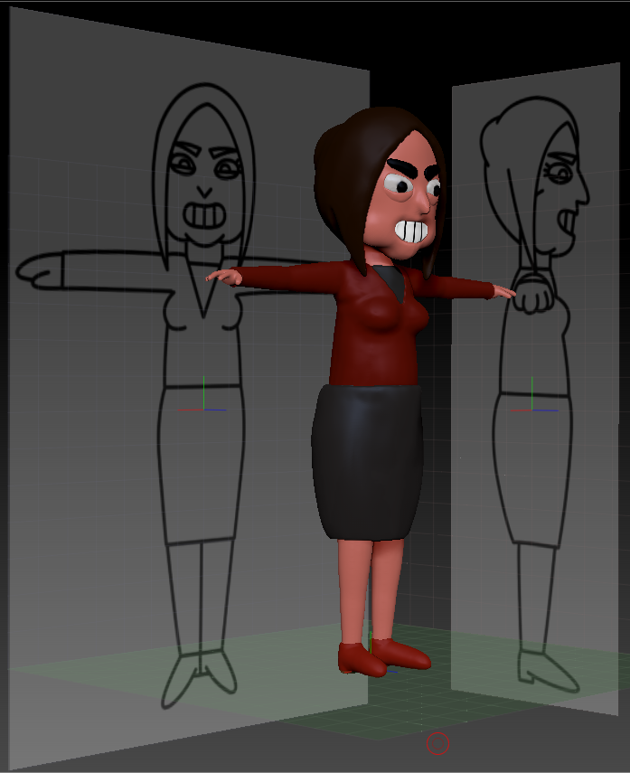
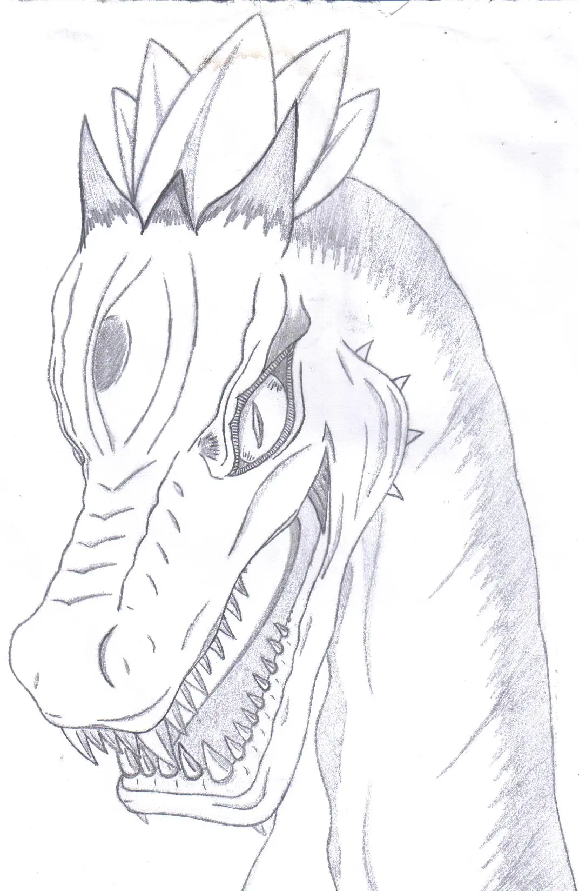

Antes de nada, permíteme que me presente...
Me llamo David.
*David Luengo Sánchez, para ser exáctos...
Soy técnico en "Animación 3D, Juegos y Entornos Interactivos"; cuyo nombre podría resumirse como
"Videojuegos" (básicamente) y todas las ramas que engloban este fascinante tema; que (muy resumídamente) son:
- dibujo y color.
- realización y edición de vídeos.
- modelado y texturizado 3D.
- animación 2D y 3D.
- creación y programación de Videojuegos.
*y una pequeña parte de imágen y sonido.
Manejo programas como:
- Adobe Photoshop (para realización/diseño y edición de imágenes), Premiere (para montaje de vídeos) y After Effects
(para edición de vídeos y realización de Motion Graphics).
- 3D Studio Max, Blender y ZBrush (para modelado y animación 3D).
- Unity y Visual Studio (para creación y programación de Videojuegos).
*y programas similares.
Y mi experiencia laboral podría resumirse en las prácticas de grado superior que realicé con:
- ALOTROLADO Comunicación, en donde desempeñé tareas como: retoque de imágenes
(con Adobe Photoshop), edición de vídeo (con Adobe After Effects y Adobe Premiere), y creación y
animación de una escena 3D (con 3D Studio Max).
Ahora...
Debido a mi forma de ser y de trabajar: soy capaz de crear un buen entorno de trabajo, de aprender nuevas herramientas y de realizar
distintas tareas (con los programas mencionados arriba).
Y como este "sector" no deja de fascinarme, cada vez más (así como a pequeños y mayores), siempre me encanta adentrarme en este "mundillo"
(durante el tiempo que me es posible...), para poder compartir (con los demás) la ilusión que este tema me llena por dentro.
Asi es que, permíteme enseñarte los trabajillos que he podido hacer, por el momento...

Aquí (como ves...), he realizado un modelo 3D (con ZBrush) de un personaje ficticio que denominé: "la profesora".
En este otro ejemplo, hice ésto con...
Aquí, hice lo siguiente...
Y aquí...
Pero ésto no es todo.
Además de lo anterior, tengo cierta habilidad innata con el dibujo.
E aquí algunos de mis diseños:

Aquí (como ves...), realicé este dibujo basándome en un dinosaurio.
En este otro, hice ésto en base a...
Aquí, hice lo siguiente...
Y aquí...
Ahora sí...
Muchas gracias por tu tiempo.
>> Éste es el final de esta web.
Espero que, todo lo que has visto aquí, haya sido de tu agrado o interés.
Sin nada más que añadir...
¡Nos vemos!